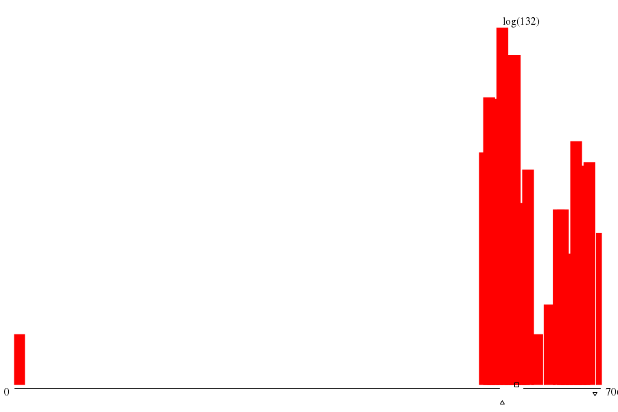

|  | ||
| maxs | mins | |
|
(9.summ) 706 |
(763.su) 3 |
|
|
(15.sum) 705 |
(0.summ) 5 |
|
|
(59.sum) 705 |
(762.su) 542 |
|
|
(244.su) 705 |
(305.su) 562 |
|
|
(380.su) 705 |
(694.su) 564 |
| memory (MB) | mode ▵ | μ ▫ | (μ+σ)/μ | 1st alloc. max value | 1st alloc. max through ▿ | 1st alloc. min waste |
| -- 616.563 xE6 |
-- 634.388 xE6 |
-- 1.080 |
throu: 1.000 waste: 15.24%
alloc: 740.295 xE6 |
throu: 1.003 waste: 14.98%
alloc: 734.003 xE6 |
throu: 1.003 waste: 14.98%
alloc: 734.003 xE6 |